Animation Editor
Table of Contents
The Animation Editor hosts the Keyframe Animation, the State Machine and Template functionalities. It is divided into four different views which will be explained below. For general information on animations in Ventuz, see Animation and State Engine.
To access each of the three views, click the respective button in the top row of icons:
| Icon | Name | Description |
|---|---|---|
| 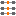 | Time View | The Timeline View offers a simplified representation of all keyframe animations in the form of duration bars. Press T to switch to the Time View. |
| 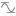 | Diagram View | The Diagram View offers the classic view for editing bezier-type animation curves. Press D to switch to the Diagram View. |
| Logic View | The Logic View is used to edit Soft and Hard States including their keyframe values as well as the behavior and methods for controlling and playing back the animations. Press L to switch to the Logic View. | |
| Data View | The Data View is used to assign optional template parameters to present/template states. Press V to switch to the Data View. |
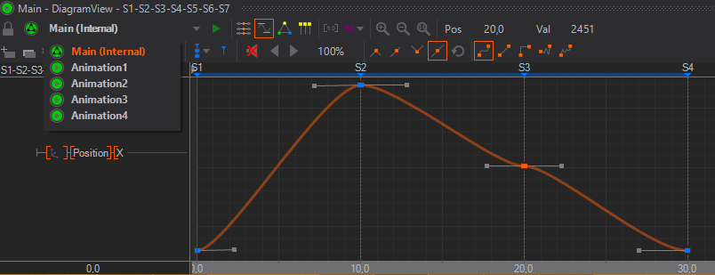
Main Animation
Every Ventuz Scene has a Main Animation by default that can be accessed in the Animation Editor from anywhere in the Ventuz Scene. That allows you to animate any property in the scene from one single point without worrying about different elements hosted on different Layer or Hierarchy levels.
Control
The Main Animation offers an easy and fast way to change how it can be controlled.
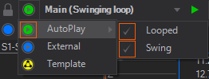
| Icon | Name | Description |
|---|---|---|
| Auto Play | Only available when there are no states placed in the animation. This animation will be played automatically on activation of the scene. Either once or in an infinite loop, only playing through or swinging forward and backward. The last keyframe of the animation defines the end of the animation for the loop and swing functionalities. | |
| Internal | Only available when there are states placed in the animation. This animation can be controlled via Methods by binding them to Events of other Nodes. The events are visible in the Logic View of the Animation Editor. Moreover, the events act like any other Keyframe Animation Node. see Control with State Logic | |
| External | This Animation's Control property is exposed so that it is accessible when this scene is loaded into a Scene Port Node or Scene Layer. | |
| Template | This Animation's Control property is added to the Scene Data so that this Scene becomes an animated Template. See the Template Engine for more information. |
Keyframe Animation Nodes
In contrast to most 3D applications, Ventuz does not have to associate animations with the scene directly.
Instead, the curves, keyframes and logic information of an animation can also all belong to a Keyframe Animation Node.
A scene can therefore have any number of independent Keyframe Animations, each with its own set of animated properties, timeline, keyframes and control capabilities.
Keyframe Animation
Keyframe Animation is the most commonly used technique to animate objects in 3D. Instead of specifying the value of a property for each frame of the animation, values are only set at important points in time, so-called keyframes. All required intermediate values are generated automatically by interpolating between the keyframe values. This is much less time consuming and produces better results than hand-editing every frame. Still, proper keyframe animation is not an easy task and is an art form in itself. However, Ventuz's keyframe animation system uses many of the same conventions 3D modeling packages use and the interested reader will find an abundance of tutorials and books on 3D animation theory available on the internet that are applicable to Ventuz.
Animation Slices
An animation can have more than one timeline, respectively the timeline can be split into multiple parts. An additional timeline is called Slice. By default, an animation has one slice. Especially when working with the State Logic, the whole animation can not be represented on a single timeline. Additional slices appear as tabs in the Time View, Diagramm View and Logic View. Slices can be created, cloned and deleted manually with the buttons in the editors menu bar.
When cloning a slice that contains State Markers the Logic View gets updated drawing new connections depicted by the slice.
If a slice gets deleted the associated connections in Logic View are deleted too.
The slice name is created by default based on the state connections represented on the according slice. The default name can be changed but needs to be unique within all slices inside a single Keyframe Animation Node.
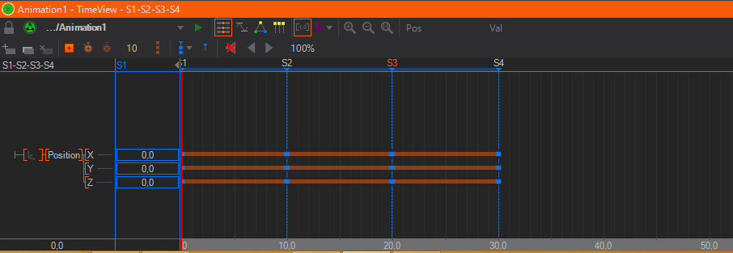
In the Logic View connection represented by the selected slice is highlighted.
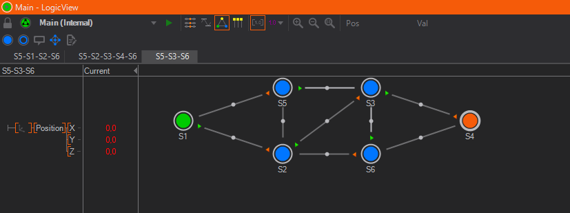
To rename a slice, double-click on the slice name on top of the animation channels tree on the left side.
Time View
The Time View contains three areas: The left row contains a tree hierarchy of Animation Channels, one channel for each property that is animated by this Keyframe Animation node.
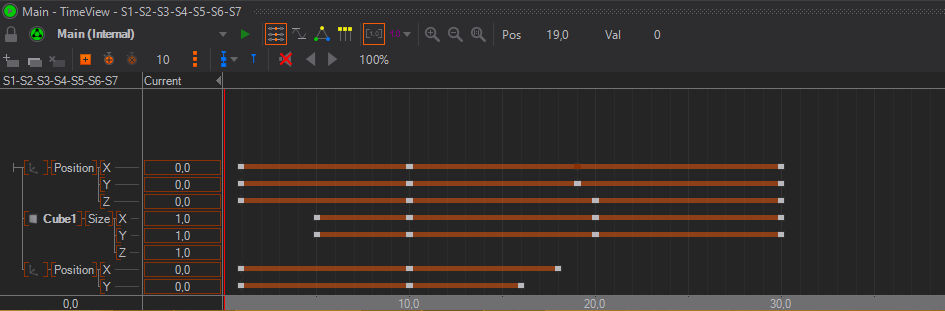
To animate a property, left-drag it from the Properties Editor to the Animation Editor or CTRL + left-click the property name. To create an additional Animation, drag a Keyframe Animation node from the Toolbox to the Content Editor.
The channel list is used to select the active channels that operations like keyframe insertion operate on. To select a channel, click on the channel name and its background will be shaded red. To select multiple channels, press and hold SHIFT while selecting channels. Channels and groups can be rearranged via drag and drop.
The right area shows the timeline for the animation and where the keyframes for each property are set. By clicking into this area, the current time (represented by a red vertical line) can be changed and as long as the left button remains pressed, the animated property will have the value defined at that point in time of the animation instead of the following the global time of the animation. By dragging left and right , the user can scrub through the animation. The current value at the time, the red line is set to, is shown in the column between the tree hierarchy and the timeline.
Initially, a property has no keyframes. To define a new one, set the current time (red line) to a point in time and then press the Add Keyframes button. Next, while staying at the same point in time, enter a value by double-click on the current column. Without a keyframe, the user can enter a current value but it will not be saved. Keyframes can be removed by clicking on the keyframe and then pressing Delete on the keyboard.
Adding of keyframes is only done for the selected property channels. If nothing happens when pressing the add keyframe button, make sure something has been selected by left-clicking in the tree structure in the left column of the Animation Editor to select one or more channels.
When clicking on a keyframe, the Properties Editor will show additional information about the keyframe. Those will be discussed once the Diagram View section has been introduced.
Multiple keyframes can be selected by either SHIFT+ on individual keyframes or by SHIFT+ outside any keyframe and dragging to start a rectangle selection. Selecting multiple keyframes will draw range borders in the timeline from the very first to the very last selected keyframe. These range borders can be used to scale all selected keyframes. Move the mouse cursor over the range borders until the scale handle is displayed and left-click and drag the mouse to scale in any direction.
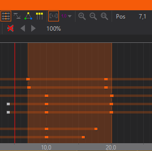
The
Stagger Keyframes
Whenever multiple keyframes are selected the different Staggering-Modes can be used to offset the keyframes. To do so simply hold the CTRL key while you move the selected keyframes. During the Staggering-Mode being active you can change the Mode by pressing SHIFT or cancle the action by presssing the .
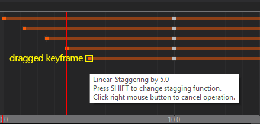 | Linear-Staggering |
|---|---|
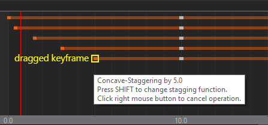 | Concave-Staggering |
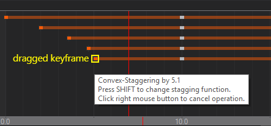 | Convex-Staggering |
Different results can be achieved by simply starting the action with the first, last or middle keyframe of your selection.
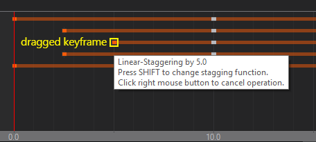
Creating Animation Channels
When dragging a property into the Animation Editor, a new Animation Channel is created for that property. A group with the node name is added, beneath that a group with the property category name and finally the entry with the property name. It is important to keep in mind that the name of all those items or the structure can be completely changed by the user. It is just a logical grouping that has no effects on the values generated.
New channels can be created by -hold on the root of the channel tree (the small T junction in the top left corner).
A created channel is not bound to a node automatically. Drag a matching property on the channel to assign it to a node. Check the context menu of a channel to see if the channel is bound to a node and/or to which.
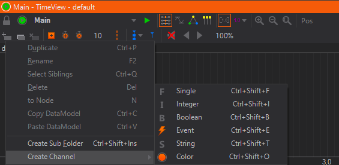
Duplicating Animation Channels
Animation channels can be duplicated to simply clone or to easily create a channel with slight variations. Either click on the desired channel and select Duplicate from the context menu or CTRL + drag the channel or press CTRL + P. A duplicated channel is not bound to a node automatically. Drag a matching property on the channel to assign it to a node. Check the context menu of a channel to see if the channel is bound to a node and/or to which.
Automatic Deletion of Channels
Usually Animation and Data Channels are deleted if the last node which is bound to that channel is removed. You can change this behaviour and channels will remain in the tree even if they are not referenced anymore. To configure this behaviour click on the Window Option button (the Eye) in the top-right corner of the Animation Editor.
Diagram View
While the Time View is mainly for organizing a large number of keyframes in an efficient way, the Diagram View visualizes the actual change in values over time in the form of function curves.
Time View and Diagram View share much of the same functionality which will not be repeated here. However note that only the curves of selected animation channels are shown in Diagram View.
Keyframes can be added, modified and deleted in the same way as it is done in the Time View. What is unique to the Diagram View is that the interpolation behavior of the curve between the keyframes can be adjusted.
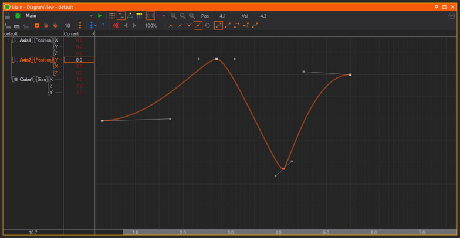
There are three ways the values between two keyframes can be interpolated. This type can be set for each segment of the curve individually by selecting the keyframe at the beginning of the segment and then choosing the appropriate interpolation type.
| Icon | Name | Description |
|---|---|---|
| Jump | Between two keyframes, the value is equal to that at the first keyframe and abruptly jumps to the new value when it reaches the second keyframe. | |
| Linear | The curve follows a straight line starting from one keyframe to the next. | |
| Smooth | The tangents of the curve at both keyframes of a segment can be set by the user. The curve will interpolate smoothly between the two keyframes while respecting the tangents specified. | |
 | Elastic | The curve uses the Elastic easing interpolation with the additional parameters Mode, Oscillations (Osc) and Springiness (Spr) |
| Bounce | The curve uses the Bounce easing interpolation with the additional parameters Mode, Bounces (Num) and Bounciness (Bnc) |
The two special interpolation types Elastic and Bounce have additional keyframe parameters that can be adjusted to modify the shape of the easing function. These easing functions are identical to those used in the Easing Nodes. Please refer to the easing documentation for details about the parameters.
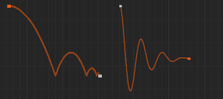
When setting a curve segment to smooth interpolation, tangent handles will appear at both sides of the keyframe which can be dragged to influence the curve. Such a keyframe can have one of four locking types that describe the relation between both handles.
| Icon | Name | Description |
|---|---|---|
| Free | Both tangents are completely independent of each other. | |
| Direction | Both tangents will be forced to have the same direction but can have different length. | |
 | Mirror | One tangent will be the mirror image of the other. |
| Fully Locked | Both tangents will have the same length and direction. |
Teach-In
In addition to defining Keyframes manually by first placing them on an animation channel and then adjusting their values, each Keyframe Animation is also able to Teach-In values that have changed in the scene.
To use this feature you can use the clock Icons next to the Add Keyframe Button. Those are visible in the Timeline-View and Diagram-View.
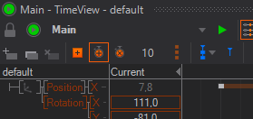
The -Button (or +) will start the teach-in process. Before clicking make sure the Timeline-Slider is placed at the point of time you want to have the first keyframes. Also all properties to be animated must have the desired values at these keyframes. The number next to the Clock-Buttons defines the amount of time units between each set of keyframes.
Once started the slider will change appearance and become orange and dotted. You can change all properties of each node that you want to be animated. When done click the Button or + again and Ventuz will perform the first teach-in. For that it will first check which properties have changed comparing to the first click. It will create an Animation Channel for each of those properties and two sets of Keyframes for those properties. The first one will be placed at the original place of the slider with the start values of the properties. And the second one will be placed after the first set with the defined distance. They will be assigned the new values of the changed properties.
When you want to create a state at the next set of Keyframes instead of using the button you can press Ctrl + + and Ventuz will automatically add a State at that point of time.
When repeating Ventuz always checks which values have been changed comparing to the last addition (rather than comparing to the start of the process). You are also able to change the time between the current set of keyframes and the next one in between additions. Also note, that you may change the time to 0 and have full control over it by placing the slider at the wanted point in time for the next keyframes.
The teach-in will stop once you press the -Button, the - key or whenever you add or delete Nodes.
Logic View
The Logic View is used to define states and the transitions between them. For a discussion on the types of States and the State Engine in general, please refer to Animation and State Engine.
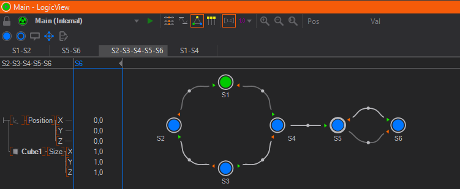
States are represented as circles in Logic View and as timeline markers in the Time View and Diagram View. Filled circles are used for Hard States and rings for Soft States. Each state has exactly one representation in Logic View regardless of how many slices are associated with it.
State Editing
New Hard or Soft States can be created by using the respective buttons in either the Logic View or one of the other views. A Hard States keyframe values will be set to the current value in the animation channels. To delete a state, select it by left-clicking on the circle and then DELETE. If a Hard State is selected, a blue box will be drawn around the current values column indicating that any change in this column will be stored in the respective keyframe. Finally, double-clicking on the state name allows the user to rename the state.
A State can be assigned one of a number of Types by selecting the State and changing the type property in the Property Editor or on the state to open the context menu.
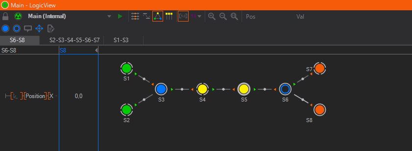
| Type | Icon | Description |
|---|---|---|
| Normal | This is the default type, no special semantics are associated with this state. Press N to turn the selected state into a Normal state. | |
| Begin | Triggers the BeginReached event of the Keyframe Animation Node. | |
| Begin Default | Same as Begin but this state is jumped to when the user triggers the Begin method of the Keyframe Animation Node. There is always exactly one default begin state in a State Logic. Press B to mark the selected state as BeginDefault state. If another state was the BeginDefault it turns into a Begin state. | |
| End | Triggers the EndReached event of the Keyframe Animation Node. | |
| End Default | Same as End but this state is jumped to when the user triggers the End method of the Keyframe Animation Node. Press E to mark the selected state as EndDefault state. If another state was the EndDefault it turns into a Begin state. | |
| Present | A present state marks a state as being self-sufficient or semantically relevant to the audience. In most situations, they are treated the same as normal states but a state has to be a Present state to act as a Templates. | |
| Present Default | Special State Type used in the context of the Template Engine and marks a Template. Press P to mark the selected state as the Present Default state. |
State Connections
Connections between States are the visual representations of parts of an animation timeline. These connections are automatically created if two or more States are added in the Time View or Diagram View.
Create Connections
To manually create a connection between two States, click on a State and drag on top of another state (or the same state). During the drag&drop operation, a black arrow indicates the direction of the connection. Creating a State connection between two States in Logic View will automatically create an associated keyframe animation called a Slice. To access the associated animation for a connection, double-click on the connection to switch to either the Time or Diagram View (whichever was used last).
When a new connection is created, Ventuz tries to add the new animation to a previous one instead of creating a new Slice. This is possible if an older Slice ends with the State the new connection starts from. While this seems inconsistent to the advanced user, it helps present a uniform timeline for linear State Logics and thus ease the transition for new users.
Delete Connections
To delete a connection you can select a connection in Logic View and press del to let Ventuz delete the Markers as well as the corresponding keyframes automatically. Or you delete the State markers in the Time View or Diagram View. You can either delete the State Markers or the whole associated Slice in the Time View or Diagram View.
Layout and Annotations
In order to make an animation logic easier to understand, the states can be rearranged and documented in the Logic View. Clicking a State and dragging it moves the state to a new location. Use SHIFT+ to select multiple states. The curvature of a connection can be changed by again clicking and dragging the square in the middle of a connection. When pressing CTRL and then continuing to drag , the curve shape can further be changed.
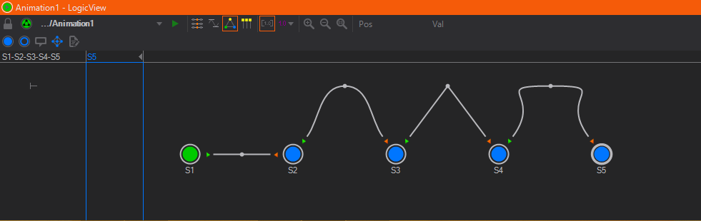
Annotations containing descriptions or instructions can be added by pressing the Create Annotation button. They can be moved by clicking and dragging and edited by double clicking on the Annotation.
Data View
The Data View works in conjunction with the Logic View to define properties of Templates. By -hold on the root (the small T junction in the top left corner), new data channels can be created similar to the Project Data and Scene Data editors. Each present state in the state logic is listed as a column. By setting a flag in the right column/row, a data channel is associated with a state. Together this information defines what properties a template has. For more details, see Templates.
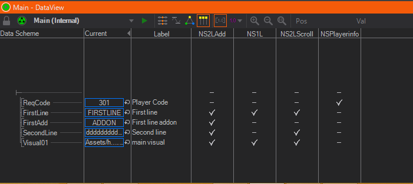
Playing Animations
After introducing all the views, it is easy to forget one important fact:
All work in the Animation Editor changes information inside a Keyframe Animation node that exists in the scene. To add a new Animation, a Keyframe Animation node has to be added, to delete an Animation, the respective node has to be removed.
Therefore the methods and information to control and play an animation are located as properties in the Keyframe Animation Node, not the Animation Editor. There are two variations of a Keyframe Animation Node, depending on whether the animation has also a State Logic or not. This is visualized by the node icon: A node with a triangle has no State Logic whereas the one with three dots has one.
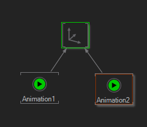
As stated before, all animation timelines contained in an animation node are by design independent of the global scene time. There is no one "start time" or speed of animation that applies to the whole scene. So in both cases, the animations contained in the animation node have to be assigned some form of "start trigger" and speed indicator.
Stateless Animation
Without a State Logic, a Keyframe Animation Node has a single Input Property called Control. Any of the Control Nodes can be bound to this, thus associating either a time or progress value with the animation. For more information and examples, see Control Nodes.
With State Logic
When a Keyframe Animation Node has a State Logic, there is an alternative way to trigger the animation. A single state can be designated as the Begin (Default) and another as the End (Default) of the animation logic. A single state can represent the Present (Default) to mark the point where the entire graphics is visible. This is done by selecting the state in the Logic View and changing its type in the Property Editor or by pressing B, E or P. Triggering the Begin, End or Present Input Method will make the state engine assume the respective state as the currently active state in the animation. They are primarily used to reset the State Machine.
While there can only be one Begin/End/Present Default state each, marking other states as Begin/End/Present causes the Animation to fire the respective output events (like EndReached etc.) which can be very useful.
The Next/Prev methods can be used to steer the direction in which the State Machine should continue. Each State can have one connection marked as the direction to follow when the State Machine is at that State and the Keyframe Animation Nodes Next method is triggered. The same is true for the Prev method. If done correctly, the user does not have to know anything about the individual states or even how many exist. He just decides if he wants to go forward or backward in his presentation.
When a connection is made between two States and a next/prev connection has not been assigned, they will be automatically assigned. To explicitly assign next or prev, select the Keyframe Animation node in the Content Editor and drag the method on to the start/end of the State Connection. To revoke the assignment, select the State Connection and reset the Begin or End rule in the Property Editor. Another way of assigning methods to connections is to right-click on the beginning or the end of a connection and choose an Input Method from the context menu. Be careful to use the ends of the connections and not the State itself!
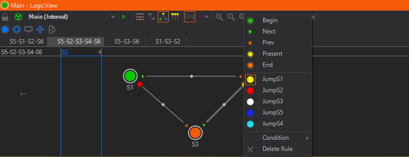
As Next/Prev are just default Input Methods that are useful in many situations, the author can even add new methods to the State Logic by using the Custom Model located on the Keyframe Animation node or in the Logic View. Added Input Methods now appear in the Property Editor of the KeyframeAnimation Node and can be triggered like any method. You can assign these methods to connections as stated above. Now if the Input Method is triggered the State Engine follows the according connection.
Simple Example:
In this example the Keyframe Animation Node has four new Input Methods (toS1, toS2...), created by the Custom Model. These methods has been assigned to the connections in a way that no matter what state the State Engine is on, triggering the method follows the connection to the according state. For example, if on State S2 triggering toS1 follows the connection between S2 and S1, whereas on State S3 triggering toS1 follows the connection between S3 and S1.
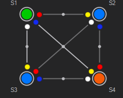
The Begin/End/... buttons in the toolbar of the Animation Editor are not for assigning states but triggering them. Pressing one of those buttons has the same effect as triggering the method in the Property Editor.
Nested Animations
Due to the modular approach of Ventuz, even the controlling aspects of a State Logic can be animated by another Keyframe Animation. Drag the Control Input Property of one Keyframe Animation node containing a State Logic animation onto another Keyframe node.
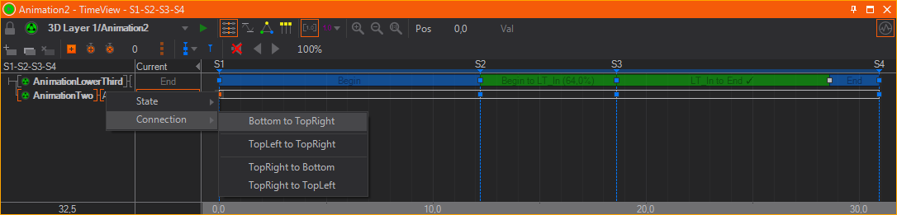
Embedded keyframe animations behave much the same way as regular keyframe animations. Keyframes are now representations of States and the connections between them represent the embedded keyframe animations. Double-click or click on a keyframe reveals the State and Connections dialog. Select either the State you want to assign to a keyframe or the State Connection to be used between two keyframes. If a State is selected, the animation will hold the State values until the next keyframe. If a State Connection is selected, the embedded keyframe animation defined by its embedded States will be played back.
In order to avoid discrepancies with jump commands and general playback when using embedded animations, it is recommended to use Hard States whenever possible.
Held States are marked in blue and State Connections are marked in green. If State Connections have been selected and the embedded animation logic does not define them in a fluid rundown, a jump in the animation will occur. These breaks in an embedded animation do not necessarily have to be an error and can be used nevertheless. These breaks are marked with a red bar at the corresponding keyframe.
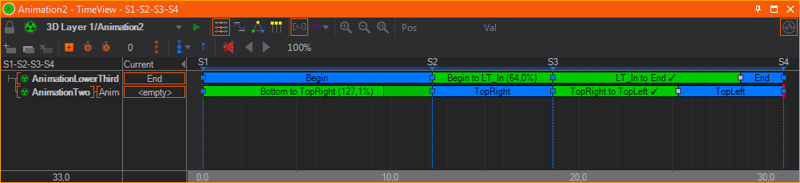
The duration of nested animations are controlled by the animation that embeds them. Depending on the duration between the keyframes this will speed up or slow down the nested animation. The animation editor shows the original duration in percentage. When hitting 100%, a check mark indicates that the connection is set to the same duration as originally defined in the nested animation.
Scripted Animation Control
Instead of Controlling a Keyframe Animation with a Control Node or another Keyframe Animation you can also script your own Control with the help of a Script Node. Like with the other options you need to bind the Control property of the Keyframe Animation Node to an Animation Output property of a Script Node. See Controlling Keyframe Animation Nodes for more details on how to script an Animation Control.
Audio and Movie Clips
Similar to nested animations, an animation can also take control of audio/video content by binding to the Control Input Property of a Movie Clip, Sound or Audio Clip node. Instead of triggering a node's play/stop method (thus letting the node run independently of an animation), the exact playback is controlled by the animation. When the animation is paused, the audio/video will pause and when the operator jumps to a specific point in the animation, the audio/video will also continue from that point in time. This allows the user to create animations that are perfectly synchronized to the audio or video content and to easily review them.
Upon binding the Control property to an animation, a new animation channel is created and certain now irrelevant properties will be hidden on the node itself. The channel itself is empty as there is no keyframe yet to synchronize the audio/video playback. By selecting the channel and inserting a keyframe, a wave form of the clip's audio will be rendered directly on to the animation channel. Overlayed on top of the wave form is an frequency analysis, rendered in orange. For processed/mastered music like modern pop/rock songs or electronic music, a wave form by itself is pretty non-descriptive and the frequency analysis makes it easier to spot where the beat is or the mood of the music changes.
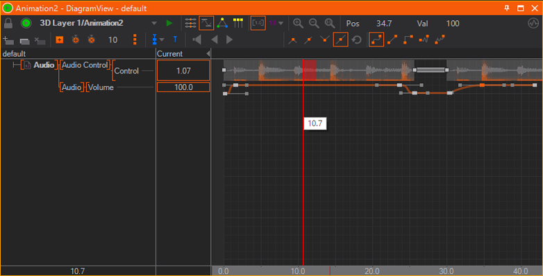
If a movie node's Enabled property is turned of to clear the movie from memory, no waveform will be rendered inside the Animation Editor.
Keyframes for audio/video content have one of two functions which can be toggled by double-clicking on the keyframe:
- Play: The content will be played starting from that keyframe's position. An optional offset (in seconds) can be specified in the value box in the top-right corner of the Animation Editor.
- Stop: Stops playback and prepares the content for being started from the beginning once the next play-keyframe is reached.
It is not possible to pause and resume audio/video content using keyframes. Instead a second play-keyframe with an appropriate offset value has to be used. Also playback is unavailable when an animation is running in reverse direction.
In contrast to ordinary video playing software, Ventuz aligns audio to the graphics output instead of the other way round. While a video player might drop frames to be always perfect in sync with the audio content, Ventuz performs on-the-fly re-sampling of the audio content to align playback to the video outputs. However, the drift between audio/video is kept below 1% and therefore any changes should barely be audible at all to the audience. If for some reason the drift lies beyond 1%, Ventuz will seek/jump in the audio material to re-align. If perfect syncronization is required, a synchronized audio hardware board should be used.
To monitor audio content at the current position of time within the animation, enable the Speaker tool button (marked by a red rectangle in the screenshot above). The red area next to the vertical line representing the current time is the area that is looped for monitoring. One great advantage of having this direct integration of audio/video inside an animation's timeline is that a user can scrub through the timeline and quickly find a position in the middle of a clip where he wants to continue his work. The speed of seeking within a clip is mainly dependent on the type, format and encoding of the content. For example, due to the long seeking times, monitoring online clips is not recommended!
If the buffering mode of a Movie Clip node is not on Normal, no audio will be available.
One very interesting feature worth mentioning here is the use of soft states within audio/video content. Since they are not related to key frames, they can be used as jump points or bookmarks to mark points of interest within a clip. This is often used for rehearsals of long presentations to jump to a specific section of the animation.
Feedback
Both States and Connections can be assigned IDs and names by selecting them in the Logic View and then changing the appropriate values in the Property Editor. This information is passed to the Output Properties of the Keyframe Animation Node when the State Machine changes States. The ID and name values propagated by the State Machine can be used for more complex automation when bound to other nodes.
Since simply dragging a property onto the Keyframe Animation Node starts a new Animation channel, a special technique has to be used to bind the output values of the State Machine to other nodes: Drag the input property on to the Keyframe Animation Node in the Content Editor, hold the mouse button and wait for a few seconds. The Property Editor will switch to the Keyframe Animation. Drag the property over the outputs button, wait, drag to the output property and release.